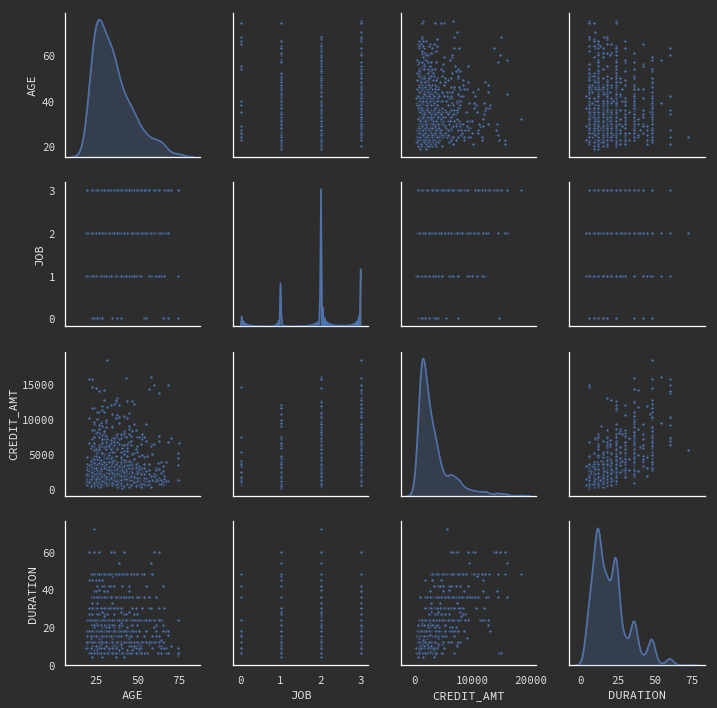
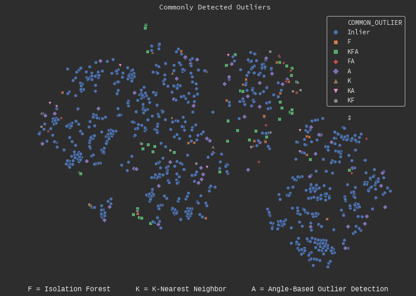
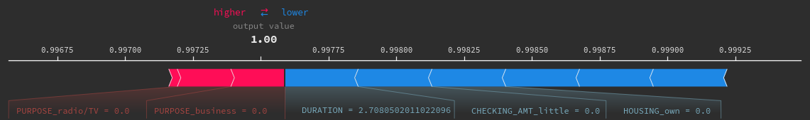
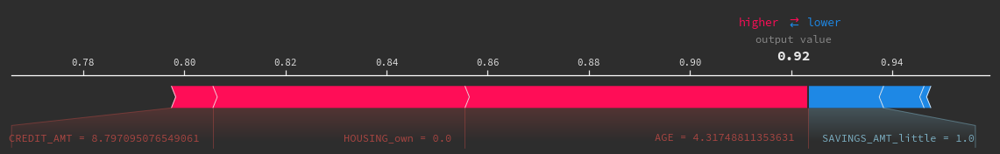
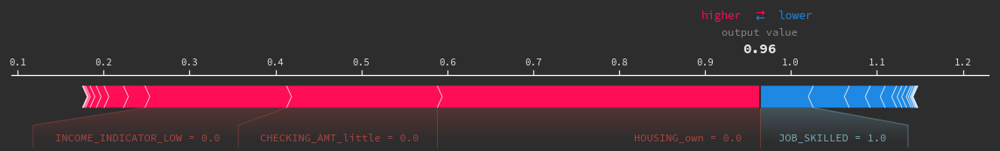

Unsupervised Outlier Detection and Credit Risk
The most common unsupervised technique is clustering; given an unlabeled dataset - what underlying structure can we uncover from the data? This can produce some significant insight - such as detecting outliers. An outlier is a data point that is ‘abnormal’ - it is rare and out of regular bounds. Outlier detection has applications in many fields, namely finance. As we adopt digital platforms to manage our transactions, financial institutions need to develop robust, real-time methods of detecting outliers to protect its customers from fraud.
To illustrate these methods, I will use the German Credit dataset - a set of 1000 people who opened a line of credit for various reasons and discard the labels. The goal is to identify and interpret the outliers.
Looking at the Data
We can make some quick observations about the dataset:
Borrower age ranges from 20 to mid-70s. The average age in the mid-30s. Credit lines can be as high as DM 20,000, however the majority of borrowers take out between DM 5,000 - DM 10,000. Borrowers tend to use their line of credit for a car or a furniture/TV. Most borrowers set their repayment duration between 10-25 months. There is some correlation between credit amount and duration.

Outlier Detection Techniques
K-Nearest Neighbors (KNN) is the most commonly used clustering technique. The number of clusters is selected manually using methods like the Elbow Curve then the algorithm recursively assigns each data point to a cluster while shifting the centermost point (aka centroid) to minimize the average distance between itself and its assigned points. Outliers are points furthest from their assigned cluster.
A similar clustering technique called Angle-Based Objected Detection (ABOD) clusters data points then assesses the weighted variance over all possible combination of points in a cluster. The weights are determined by the points distance from the center. The intuition behind this method is that KNN and similar distance-based metric models diminish in quality as dimensionality increases.
Finally, a method called Isolation Forest - similar to Random Forest - is an ensemble method that recursively splits data on some arbitrary feature and value. The intuition is that outliers will be ‘isolated’ after a few splits (i.e. outliers are closer to the root node).
The plot below shows how each model flags outliers:

We can see that ABOD is more sensitive than other models as it flags far more data points as outliers.
Assessing Results
Assessing the performance of an unsupervised model isn’t straight forward since there is no way to test accuracy against labled data and therefore highly dependent on the use case and context. In this case, credit risk, we can gauge an outlier’s true risk based on their profile compared to all other borrowers and borrowers of similar demographics.
Let us take a look at a few commonly flagged outlier:
Low-Risk Outlier:
Borrower Profile:
╔═════════════════════════════╦════════╗
║ AGE ║ 54.0 ║
║ CREDIT_AMT ║ 3051.0 ║
║ DURATION ║ 48.0 ║
║ SEX_male ║ 1.0 ║
║ JOB_SKILLED ║ 1.0 ║
║ SAVINGS_AMT_little ║ 1.0 ║
║ CHECKING_AMT_little ║ 1.0 ║
║ HOUSING_own ║ 1.0 ║
║ PURPOSE_domestic_appliances ║ 1.0 ║
║ RESIDENT_YES ║ 1.0 ║
║ INCOME_INDICATOR_MED ║ 1.0 ║
╚═════════════════════════════╩════════╝
The borrower’s profile puts him on the further end of the bell curve in several categories: The amount of credit and duration he has taken out for appliances is extremely high, the average being around DM 1,250 over 13 months. The typical demographic of appliance purchasers are 32 year old home owners with a medium level income with a skilled job.

Moderate Risk Outlier:
Borrower Profile:
╔══════════════════════╦════════╗
║ AGE ║ 75.0 ║
║ CREDIT_AMT ║ 6615.0 ║
║ DURATION ║ 24.0 ║
║ SEX_male ║ 1.0 ║
║ JOB_HIGH_SKILLED ║ 1.0 ║
║ SAVINGS_AMT_little ║ 1.0 ║
║ CHECKING_AMT_little ║ 1.0 ║
║ HOUSING_free ║ 1.0 ║
║ PURPOSE_car ║ 1.0 ║
║ RESIDENT_YES ║ 1.0 ║
║ INCOME_INDICATOR_MED ║ 1.0 ║
╚══════════════════════╩════════╝
Looking at the Shapley values, we see that the biggest factors that impact the outcome are age, credit amount, amount of savings and that he is not a homeowner.

High Risk Outlier:
Borrower Profile:
╔════════════════════════╦═════════╗
║ AGE ║ 44.0 ║
║ CREDIT_AMT ║ 10127.0 ║
║ DURATION ║ 48.0 ║
║ SEX_male ║ 1.0 ║
║ JOB_SKILLED ║ 1.0 ║
║ SAVINGS_AMT_quite_rich ║ 1.0 ║
║ CHECKING_AMT_NaN ║ 1.0 ║
║ HOUSING_free ║ 1.0 ║
║ PURPOSE_car ║ 1.0 ║
║ RESIDENT_YES ║ 1.0 ║
║ INCOME_INDICATOR_MED ║ 1.0 ║
╚════════════════════════╩═════════╝

Finally, this borrower is flagged as a high risk. Even though he has a large savings amount, there is no information about his available funds (CHECKING_AMT) which hurts his overall income indicator. On top of that, 70% borrowers in his age bracket are homeowners.